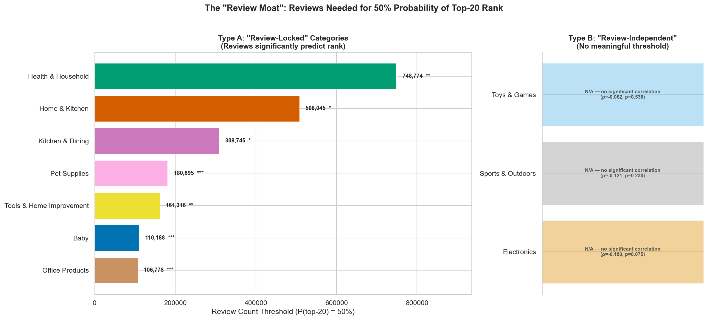
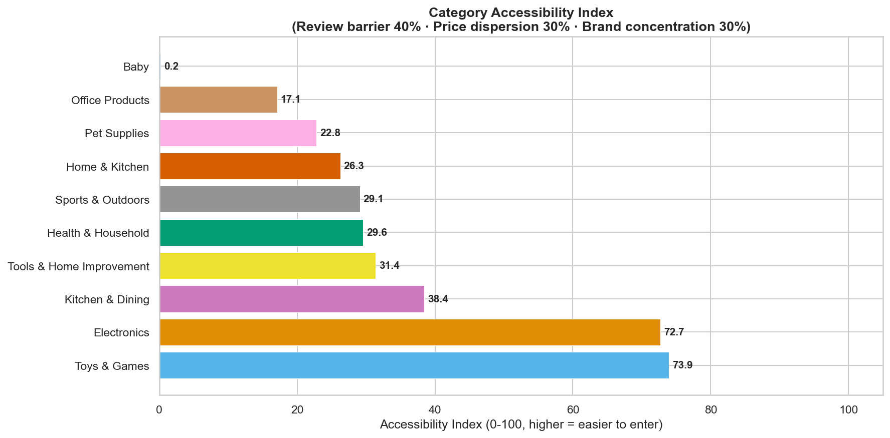
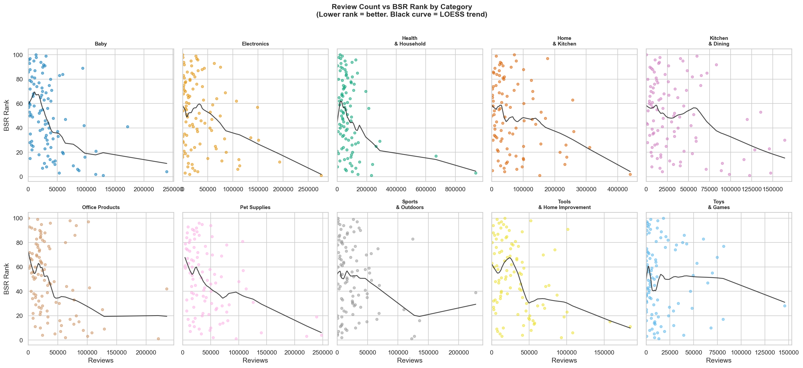
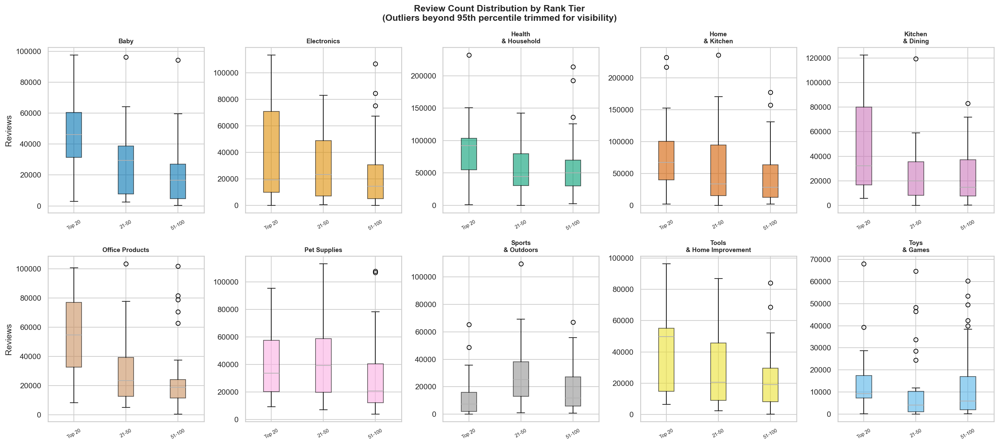
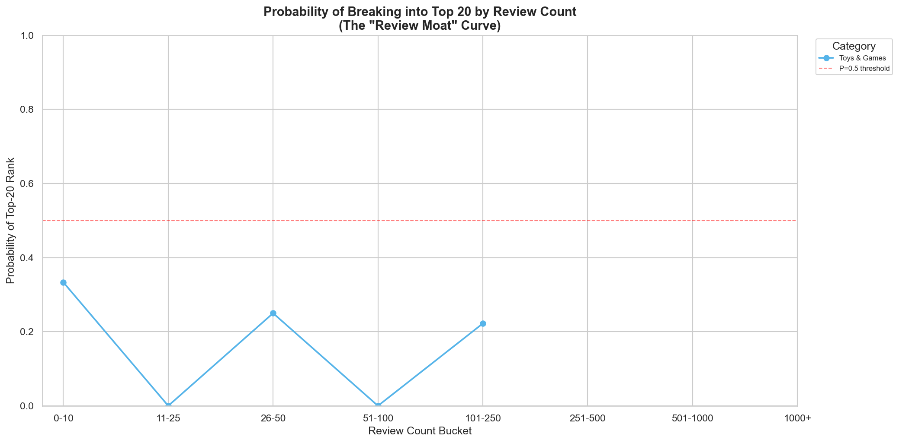
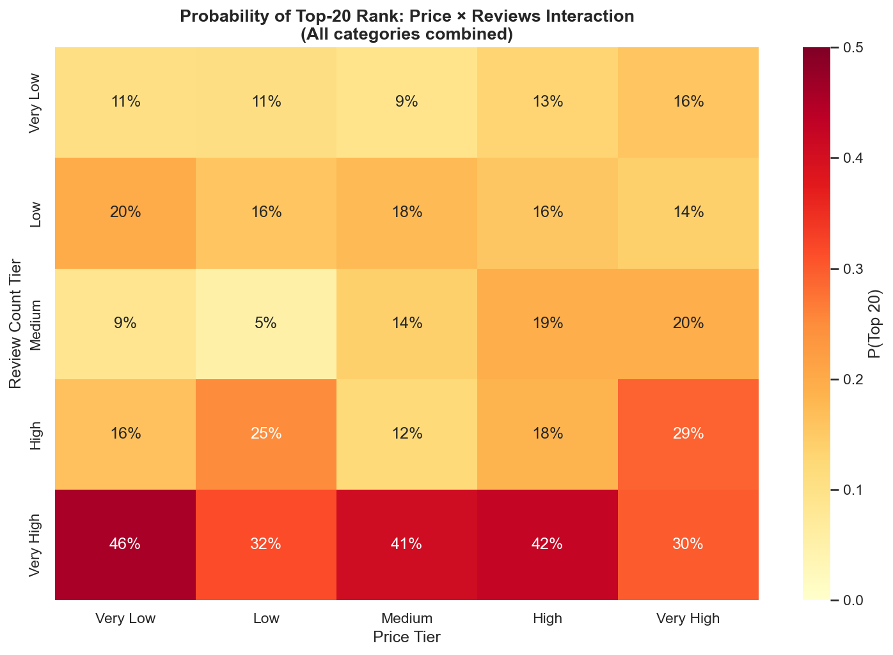
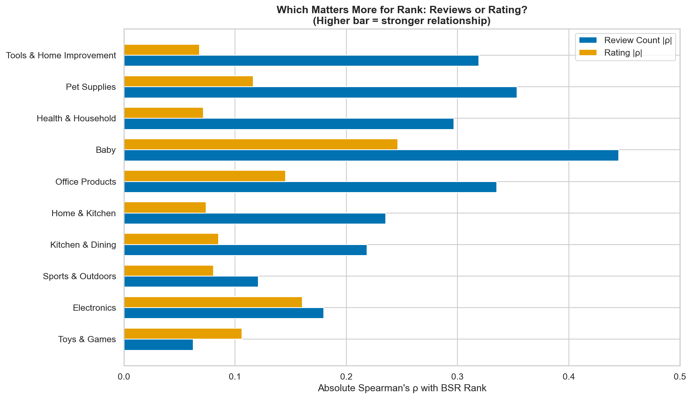
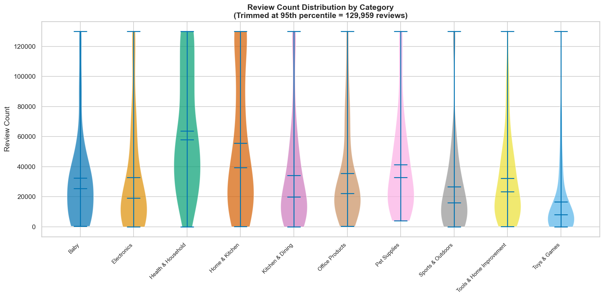

We scraped 984 products across 10 Amazon Best Seller categories and ran Spearman correlations, logistic regression, and Mann-Whitney U tests to quantify the "Review Moat."
Amazon categories fall into two fundamentally different competitive landscapes. This framework has never been documented before.
7 of 10 categories — Reviews strongly predict BSR rank
All significant at p < 0.05. You need a review generation strategy to compete in the top 20.
3 of 10 categories — Reviews do NOT predict rank
Other factors — price, brand, rating, listing quality — dominate rank determination. Your review count is not your bottleneck.
Type A categories show meaningful thresholds with significance levels (*** p<0.001). Type B categories have no statistically meaningful threshold — the logistic model has no signal to work with.

Ranked by surprise value — what the data actually says vs what sellers assume.
Only 0.8% of top-100 products have fewer than 50 reviews. Only 1.3% have under 100. The median top-100 product has 24,570 reviews. If you want to compete in the top 100 of a major category, you're up against products with tens of thousands of reviews.
Electronics (p=0.075), Sports & Outdoors (p=0.230), and Toys & Games (p=0.538) show no significant Spearman correlation between review count and BSR. In these categories, other factors dominate.
This is the only category where star rating (|ρ|=0.106) has a stronger correlation with rank than review count (|ρ|=0.062). A 4.8-star product with 100 reviews will outrank a 4.2-star product with 1,000 reviews.
Products in the "Very High" price tier with "Very Low" review counts have a 15.6% probability of top-20 rank — vs 10.6% for low-price, low-review products. The effect is real but modest.
Mann-Whitney U test confirms top-20 products have significantly higher review counts than rank 21-100 products. U=100,570, p=1.04×10⁻¹⁰. The review gap is real — but its magnitude varies dramatically by category.
Zero products in Baby's top 100 have fewer than 50 reviews. Median review count: 25,506. The Accessibility Index scores Baby at 0.2/100 — by far the hardest category for new entrants.
Composite score (0–100) combining review barrier (40%), price dispersion (30%), and brand concentration (30%). Higher = easier for new sellers to enter.
| # | Category | Score | Key Advantage |
|---|---|---|---|
| 1 | Toys & Games | 73.9 | Low review barrier + moderate price spread |
| 2 | Electronics | 72.7 | Highest price dispersion (2.17 CV) + review-independent |
| 3 | Kitchen & Dining | 38.4 | Moderate across all dimensions |
| 4 | Tools & Home Improvement | 31.4 | Good price dispersion |
| 5 | Health & Household | 29.6 | Moderate |
| 6 | Sports & Outdoors | 29.1 | Review-independent but concentrated |
| 7 | Home & Kitchen | 26.3 | Moderate price dispersion |
| 8 | Pet Supplies | 22.8 | Below average on all metrics |
| 9 | Office Products | 17.1 | High brand concentration |
| 10 | Baby | 0.2 | Lowest accessibility — impenetrable |

All 8 visualizations from the analysis. Click any chart to open full-size.
10-panel facet grid. Black curve = LOESS smoothed trend. Lower rank = better. In Electronics, Sports & Outdoors, and Toys & Games, the trend line is nearly flat — reviews simply don't predict rank.

Box plots showing review count distributions for Top 20, 21-50, and 51-100 rank tiers per category. The gap between Top 20 and the rest is visually dramatic in Baby and Pet Supplies — minimal in Electronics and Toys.

The "Review Moat Curve" — probability of breaking into the top 20 as reviews accumulate. The red dashed line marks the 50% threshold. Categories that never cross the line are effectively review-independent.

Heatmap showing how price tier and review count tier interact to predict top-20 probability. High price + high reviews = 30% top-20 probability (the winning combination).

Paired bar chart comparing absolute Spearman's ρ for review count vs star rating per category. Only in Toys & Games does the orange bar (rating) overtake the blue bar (reviews).

Violin plots showing the full distribution shape. The long right tails in Health & Household and Home & Kitchen show extreme outliers — some top-100 products have reviews in the hundreds of thousands.

Stop obsessing over review counts in Electronics, Sports, and Toys. Look at price positioning, brand differentiation, and rating quality instead. Review count is not your bottleneck in these categories.
Be realistic. You're not breaking into the top 20 with 100 reviews in Baby or Health & Household. Budget for review generation or compete at lower ranks. The numbers don't lie.